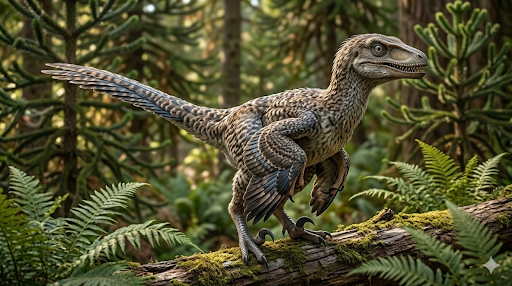

ולוצירפטור
The Swift Plunderer: Velociraptor mongoliensis

תיק מחקר: נתונים אבולוציוניים משולבים
תקופת פעילות
לפני כ-75 עד 71 מיליון שנה
תור הקרטיקון המאוחר (גיל הקמפן). חי בסביבה מדברית וצחיחה עם דיונות חול נודדות.
מסה ומשקל האמיתי
כ-15 קילוגרם בלבד!
בניגוד למיתוס ההוליוודי, הולוצירפטור היה קל משקל, בערך בגודלו של תרנגול הודו גדול או כלב זאב קטן.
ממדים (אורך וגובה)
אורך כ-2 מטרים, גובה חצי מטר
מרבית האורך הורכב מזנב נוקשה במיוחד ששימש כהגה לאיזון בפניות חדות.
מיקום גיאוגרפי
מדבר גובי, מונגוליה וסין
המאובנים התגלו בתצורות דג'דוכטה (Djadochta) וברון גויוט (Barun Goyot), הידועות בסופות החול שלהן שקברו דינוזאורים חיים ושימרו אותם מושלם.
סיווג טקסונומי קריטי
תרופוד מנוצה (Dromaeosauridae)
נציג מפורסם של משפחת הדרומאוזאוריים (ה"רפטורים"). התאפיין בגולגולת צרה וארוכה, מוח גדול יחסית, וטופר חרמש קטלני בכל אחת מרגליו האחוריות. הוא היה מכוסה לחלוטין בנוצות.
01 // ניתוח אטימולוגי נרחב
| החלק בשם | שפת מקור | פירוש ומשמעות היסטורית |
|---|---|---|
| Velox | לטינית | מהיר / זריז (Swift) השם הוענק בשנת 1924 על ידי נשיא המוזיאון האמריקאי לתולדות הטבע, הנרי פיירפילד אוסבורן (H.F. Osborn), שזיהה מיד שמבנה רגליו האחוריות נועד לריצה מהירה במיוחד. |
| raptor | לטינית | שודד / גזלן (Plunderer / Robber) מונח המתאר עופות דורסים או טורפים זריזים שתופסים את טרפם בכוח. הלחם השם המלא: **"השודד המהיר"**. |
| mongoliensis | לטינית של מיקום גיאוגרפי | ממונגוליה שם המין המוכר ביותר, המציין את ארץ המוצא שבה נמצא ההולוטייפ (במדבר גובי שבמונגוליה החיצונית). קיימים מינים נוספים כמו *V. osmolskae* מסין. |
02 // תולדות הגילוי: הרפתקאות במדבר ואוצרות החול
משלחות רוי צ'פמן אנדרוז (1923)
ב-1922, המוזיאון האמריקאי לתולדות הטבע שלח משלחת אדירה למדבר גובי בראשותו של ההרפתקן **רוי צ'פמן אנדרוז** (ההשראה לאינדיאנה ג'ונס). הם חצו את המדבר בשיירת מכוניות דודג' וגמלים. ב-11 באוגוסט 1923, הפלאונטולוג פיטר קייסן מצא גולגולת (אמנם מעט מעוכה) וטופר חרמש מאיים. שנה לאחר מכן, הטורף הזריז קיבל את השם הרשמי "ולוצירפטור".
הוליווד מול המדע: "פארק היורה" (1993)
הסרט הפך אותו לטורף מפורסם, אך יצר מיתוסים שגויים. הרפטורים בסרט היו בגובה של אדם (2 מטרים), חסרי נוצות, וחיו באקלים טרופי. במציאות הם הגיעו עד גובה הברך של אדם (0.5 מטרים), חיו במדבר דיונות צחיח, והיו מכוסים בנוצות. סטיבן ספילברג ביסס את הרפטורים שלו על קרוב משפחה גדול בשם דיינוניכוס, אך העדיף את השם "ולוצירפטור" מטעמים קולנועיים.
מצב הממצאים: אוצרות החול של גובי (התשובות לתעלומות השלד)
בניגוד לדינוזאורי ענק שקשה לשמר (כדוגמת הספינוזאורוס), ההיסטוריה של הולוצירפטור היא גן עדן לפלאונטולוגים:
- האם נמצא מאובן שלם? בהחלט כן! מכיוון שהולוצירפטור היה חיה קטנה, סופות חול פתאומיות או קריסות של דיונות חול במדבר גובי קברו פרטים רבים בעודם בחיים. אסונות אלו מנעו מטורפים אוכלי נבלות לפזר את העצמות. התוצאה: בידי המדע ישנם שלדים שלמים, מחוברים לחלוטין.
- כמות הממצאים: למעלה מ-24 פרטים עד היום נמצאו **למעלה מ-24 פרטים שונים** במצב שימור טוב עד מושלם (מתוכם לפחות 12 שלדים מחוברים ושלמים כמעט לחלוטין). בעולם התרופודים מדובר בכמות אדירה, רובה מגיעה מתצורות הסלע דג'דוכטה וברון גויוט במונגוליה ובסין. כמות זו אפשרה לחקור את קצב הגידול שלהם, מגורים ועד בוגרים.
- גולגולות שלמות וחוטם קעור: האם מצאו גולגולת שלמה? **כן, ובכמויות מרשימות!** הגולגולות השלמות הוכיחו שלולוצירפטור הייתה גולגולת צרה וארוכה (כ-25 ס"מ), בעלת חוטם קעור וייחודי (Snoot) שחלקו העליון התעקל מעט כלפי מעלה. הגולגולות האלו נסרקו ב-CT והוכיחו אינטליגנציה גבוהה וחושי ריח וראייה מפותחים מאוד.
- הדינוזאורים הלוחמים (1971): זהו אולי השלד השלם המפורסם ביותר שנמצא. משלחת פולנית-מונגולית מצאה בלב המדבר שלד של ולוצירפטור הנעול בקרב למוות עם פרוטוצרטופס (צמחוני קטן). הרפטור נעץ את טופר החרמש שלו בצווארו של הפרוטוצרטופס, בעוד שהאחרון כלא את זרועו של הרפטור במקורו. סופת חול קברה את שניהם יחד, והקפיאה את סצנת הקרב ל-71 מיליון שנה.
אקולוגיה וביומכניקה: רוצח במדבר
הולוצירפטור היה טורף מתוחכם (Carnivore) מותאם לדיונות. למרות מוחו הגדול, **אין שום ראיה מדעית לכך שצדו בלהקות מאורגנות** (מיתוס נוסף מפארק היורה). סביר יותר שצדו לבד או כהתקבצות אקראית של פרטים.
טופר החרמש (The Sickle Claw)
סימן ההיכר שלו היה הטופר הענק (כ-6.5 ס"מ) על הבוהן השנייה של כל רגל. במהלך ריצה, הטופר הוחזק מורם באוויר כדי למנוע את שחיקתו.
בעבר חשבו ששימש לשיסוף קורבנות. מודלים ביומכניים הראו שהטופר שימש למעשה כמו **קרסי טיפוס (Grappling hook)**. הוא קפץ על הטרף (כמו פרוטוצרטופס), ונעץ את הטפרים עמוק בבשר כדי לרתק את הטרף לקרקע בזמן שאכל אותו בעודו בחיים.
אנטומיה של דורס מנוצה וזנב נוקשה
**ההוכחה המוחלטת לנוצות (2007):** חוקרים גילו בעצם זרוע של ולוצירפטור "בליטות קולמוס" (Quill knobs), המוכיחות שהיו לו כנפיים מנוצות של ממש. למה דינוזאור שאינו עף צריך כנפיים? לתצוגה (חיזור), לדגירה (חימום הקן), וכדי לשמור על איזון ולרתק את הטרף לקרקע בנפנוף חזק של הכנפיים (Raptor Prey Restraint).
**הזנב הנוקשה:** זנבו היה עטוף ברצועות גידים שהתאבנו (Ossified tendons). זה הפך את הזנב למוט נוקשה להפליא שהונף רק מצד לצד, ושימש כהגה איזון אווירודינמי שאפשר פניות חדות במהירויות גבוהות מבלי לאבד שיווי משקל.